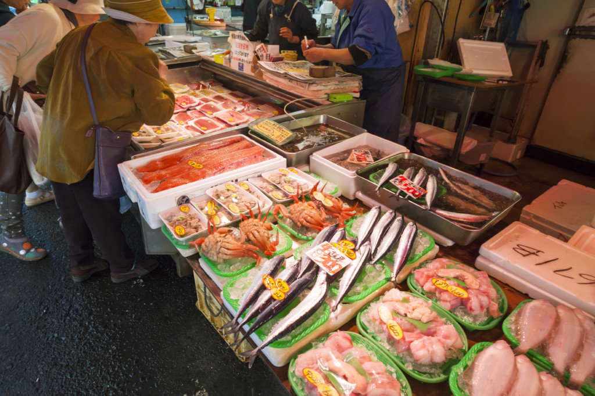

届く季節と、食卓の場面で選ぶ。
この冬の食卓に並ぶ魚介、年末年始の鍋やすき焼き、旬の果物。ふるさと納税手帳は、「これが届く日」を思い浮かべるところから寄附先を選ぶメディアです。控除上限額の目安と手続きの期限は、決めたあとに外さないための確認として、最後にまとめて確かめます。

今の季節の食卓
冬の魚介と、年末年始の鍋やすき焼き
寄附の締切
12月31日の決済完了まで
ワンストップ特例の申請期限
翌年1月10日必着
このサイトはアフィリエイトプログラムを利用する場合があります。広告を含む記事には「PR」と明記します。方針は運営者情報と広告・編集方針をご覧ください。このサイトは税務の個別相談を行うものではありません。
季節と食卓から選ぶ
記事一覧へ →
冬の魚介と、年末年始の鍋やすき焼きさとふるで年末に寄附する手順 — 決済方法で変わる寄附日と、残り枠の寄附の進め方。品選びは年が明けてからでも間に合います。
寄附金の使い道で選ぶ寄附金の使い道はどこまで選べるか — 分野・事業・クラウドファンディング型の3段階を、総務省の現況調査の実数で整理しました。
 旬の果物と、年末の確認ふるさと納税の年末チェックリスト — 上限額の最終確認からワンストップ特例の申請期限まで、12月31日までに確認する7項目。
目安シミュレーター控除上限額の目安を、年収帯と家族構成を選ぶだけで引ける簡易版です。計算の前提と対象外の要素を明示しています。
旬の果物と、年末の確認ふるさと納税の年末チェックリスト — 上限額の最終確認からワンストップ特例の申請期限まで、12月31日までに確認する7項目。
目安シミュレーター控除上限額の目安を、年収帯と家族構成を選ぶだけで引ける簡易版です。計算の前提と対象外の要素を明示しています。
旬の果物と、年末の確認ふるさと納税の年末チェックリスト — 上限額の最終確認からワンストップ特例の申請期限まで、12月31日までに確認する7項目。
目安シミュレーター控除上限額の目安を、年収帯と家族構成を選ぶだけで引ける簡易版です。計算の前提と対象外の要素を明示しています。
最後に確かめる（上限・期限・制度）
記事一覧へ →番号は人気の順位ではなく、寄附の前に確認する順番に並べています。
1控除上限額の早見表（年収・家族構成別）年収と家族構成から上限額の目安を引ける一覧表です。
2控除上限額の仕組み — なぜ「年収だけ」では決まらないのか控除は所得税分・住民税基本分・住民税特例分の3つでできています。その決まり方を整理します。
3ワンストップ特例の申請期限と、年末の寄附で気をつけること申請書は寄附した翌年の1月10日必着。5自治体の条件など、期限まわりの確認事項をまとめました。
4ふるさと納税のポイント付与は2025年10月に終了した — 現在のルール確認仲介サイトのポイント付与が禁止された経緯と、寄附先の選び方で何が変わったかを公式情報で確認しました。
ふるさと納税のポイント付与は2025年10月に終了した — 現在のルール確認仲介サイトのポイント付与が禁止された経緯と、寄附先の選び方で何が変わったかを公式情報で確認しました。
探し方の入口
記事一覧へ →計算ツール
このサイトでやること
ふるさと納税で先に浮かぶのは、「何が届くか」のはずです。このサイトでは、届く季節と食卓の場面から選び始め、制度と期限の確認は最後にまとめて済ませる順番で記事を置いています。扱うのは次の3つです。
1. 季節と食卓で選ぶ
届く季節と食卓の場面から、寄附先のカテゴリを考える記事を置きます。
2. 産地と作り手を知る
どの土地の、誰の手から届くか。産地と作り手の公表情報を、事実として整理します。
3. 最後に、上限と期限を確かめる
控除上限額の目安、年末の寄附期限、ワンストップ特例の申請期限を、公式情報で確認します。
制度変更アラート（無料）
ふるさと納税のルールや控除上限の計算方法に変更があったとき、メールでお知らせします。登録フォーム（運営：globe Entertainment）